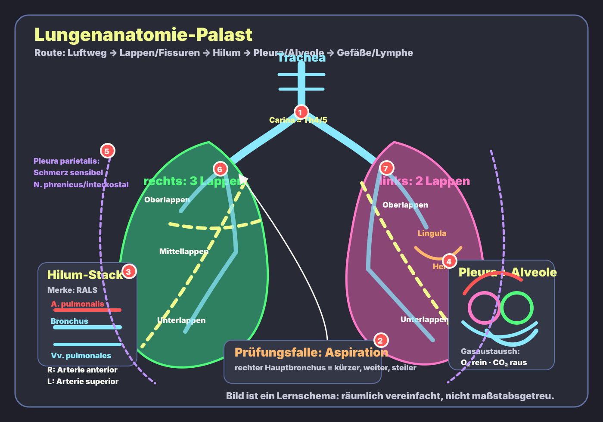
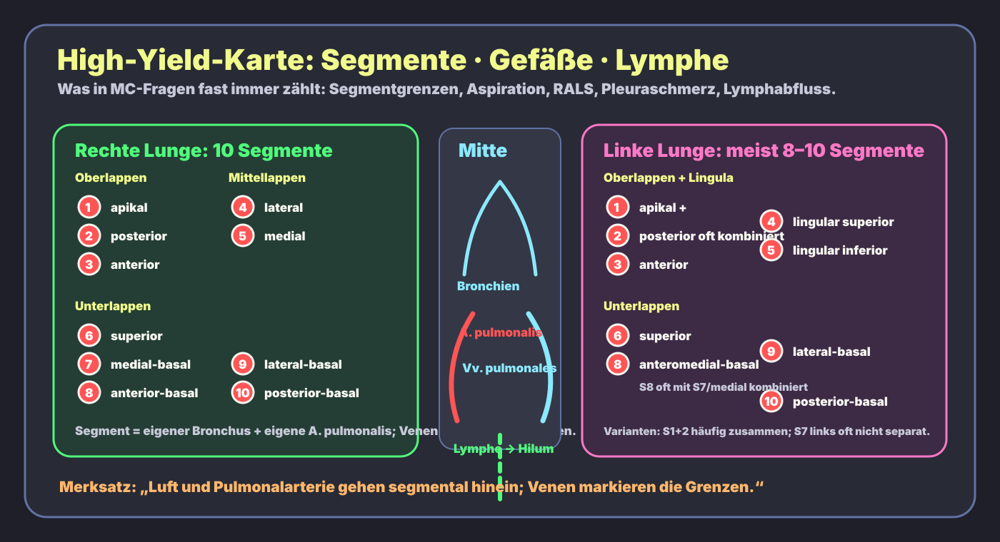

Rechts = 3 Lappen
Ober- · Mittel- · Unterlappen
Rechte Lunge hat Horizontalfissur und Schrägfissur. Mehr Volumen, weil links das Herz Platz braucht.
Anatomie · Lunge · High Yield
Eine kompakte Lernseite für die Dinge, die in Anatomie, Klinik und MC-Fragen immer wieder auftauchen: rechte vs. linke Lunge, Fissuren, Bronchialbaum, bronchopulmonale Segmente, Hilum-Topographie, Pleura-Innervation, Blutversorgung und Lymphabfluss.
Die Hauptgrafik codiert die Route: Luftweg → Lappen/Fissuren → Hilum → Pleura/Alveole → Gefäße/Lymphe. Sie ist bewusst schematisch, damit die Prüfungsfallen klarer sind als in einer übervollen Atlaszeichnung.

Ober- · Mittel- · Unterlappen
Rechte Lunge hat Horizontalfissur und Schrägfissur. Mehr Volumen, weil links das Herz Platz braucht.
Ober- · Unterlappen + Lingula
Linke Lunge hat nur Schrägfissur, dazu Herzbucht [Incisura cardiaca] und Lingula als Mittellappen-Äquivalent.
rechts runter
Rechter Hauptbronchus ist kürzer, weiter, steiler → Fremdkörper/Aspirat landen klassisch rechts, oft im rechten Unterlappen.
Right Anterior · Left Superior
Die A. pulmonalis liegt rechts eher anterior zum Bronchus, links eher superior zum Bronchus.
Bronchopulmonale Segmente sind chirurgisch wichtig: jedes Segment hat einen eigenen Segmentbronchus und einen Ast der A. pulmonalis; die Venen laufen eher zwischen Segmenten.

| Thema | Fakt | Warum high-yield? | Prüfungsfalle |
|---|---|---|---|
| Lappen | Rechts 3 Lappen; links 2 Lappen + Lingula. | Grundlage für Röntgen/CT, Auskultation, Pneumonie-Lokalisation. | Lingula ist kein eigener Lappen, sondern Teil des linken Oberlappens. |
| Fissuren | Rechts: Horizontal- und Schrägfissur. Links: Schrägfissur. | Bestimmt Lappengrenzen in Bildgebung und Anatomiepräparat. | Mittellappen existiert nur rechts. |
| Bronchialbaum | Trachea → Hauptbronchien → Lappenbronchien → Segmentbronchien → Bronchiolen → terminale Bronchiolen → respiratorische Bronchiolen → Alveolen. | Trennt leitende Zone von respiratorischer Zone. | Bronchiolen haben keinen Knorpel; Alveolen sind Gasaustauschzone. |
| Aspiration | Rechter Hauptbronchus: kürzer, weiter, steiler. | Klassischer Fremdkörper-/Aspirationsbefund. | Im Liegen können abhängig von Position auch posteriore Oberlappen-/superiore Unterlappensegmente betroffen sein. |
| Bronchopulmonale Segmente | Funktionell-chirurgische Einheiten mit Segmentbronchus und Segmentarterie. | Segmentresektion möglich; Segmentpneumonie lokalisierbar. | Segmentvenen verlaufen intersegmental, also eher zwischen Segmenten. |
| Hilum / Lungenwurzel | Bronchien, A./Vv. pulmonales, Bronchialgefäße, Lymphgefäße, Nerven. | Topographie in Anatomie, OP, Bildgebung. | RALS: Pulmonalarterie liegt rechts anterior, links superior relativ zum Bronchus. |
| Blutversorgung | Aa. pulmonales: funktionell, sauerstoffarm zur Oxygenierung. Aa. bronchiales: nutritiv für Bronchialwand/Lungengewebe. | Unterscheidet Gasaustauschkreislauf von Eigenversorgung. | Pulmonalarterien transportieren sauerstoffarmes Blut; Pulmonalvenen sauerstoffreiches Blut. |
| Pleura | Viszerale Pleura bedeckt Lunge; parietale Pleura kleidet Thoraxwand/Zwerchfell/Mediastinum aus. | Schmerz, Pneumothorax, Erguss, Reibegeräusch. | Viszerale Pleura kaum somatischer Schmerz; parietale Pleura schmerzempfindlich. |
| Pleura-Innervation | Costale Pleura: Interkostalnerven. Zentrale diaphragmale/mediastinale Pleura: N. phrenicus C3–5. | Erklärt Schulterschmerz bei Zwerchfell-/Pleura-Reizung. | Periphere diaphragmale Pleura eher Interkostalnerven; zentrale diaphragmale Pleura N. phrenicus. |
| Lymphe | Oberflächlich/tief → bronchopulmonale Hilus-LK → tracheobronchiale LK → bronchomediastinale Stämme. | Wichtig bei Tumor-Staging, Infektion, Sarkoidose. | Hiläre Lymphknotenvergrößerung ist klinisch/bildgebend sehr relevant. |
Frage: Ein älterer Patient aspirierte beim Essen. Im Röntgen/CT findet sich eine Verschattung in einem abhängigen rechten Lungenabschnitt. Welcher anatomische Grund macht die rechte Seite wahrscheinlicher?
Antwort: Der rechte Hauptbronchus ist kürzer, weiter und steiler als der linke; Aspirat/Fremdkörper folgen deshalb häufiger dem rechten Bronchialsystem.
Die Diagramme sind selbst gezeichnete Lernschemata und nicht maßstabsgetreu. Segmentvarianten, besonders links, können je nach Atlas/Lehrbuch unterschiedlich zusammengefasst werden.
OpenStax Anatomy & Physiology: The Lungs · StatPearls: Anatomy, Thorax, Lung · StatPearls: Anatomy, Thorax, Bronchial